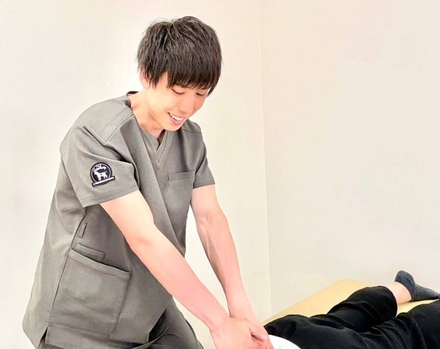
理学療法士の整体院｜富山市下新本町
総合病院で16年、延べ4万人以上の施術に携わった理学療法士が、
カウンセリングから運動まで、ひとりで責任をもって担当します。
富山市下新本町、アルビス奥田店から徒歩2分の完全予約制の整体院です。
「なぜ痛むのか」をカウンセリングと検査で確かめてから、
関節整体と運動療法で、痛みに怯えない毎日を目指すお手伝いをします。
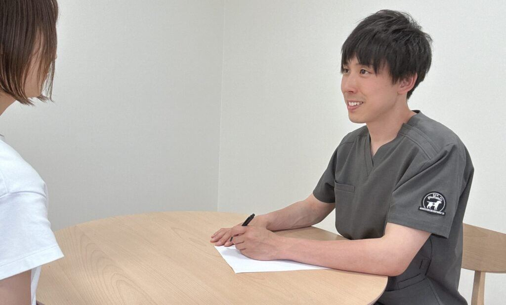
カウンセリング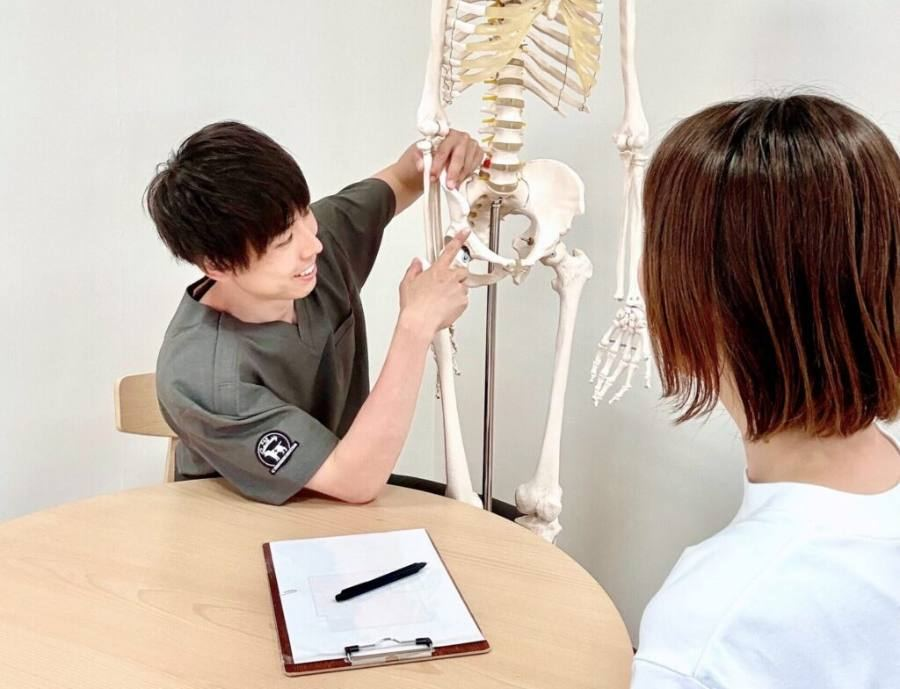
検査・関節整体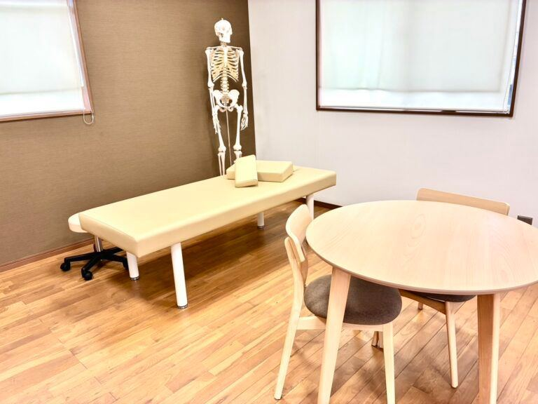
運動療法Googleのクチコミ平均（26件・2026年11月時点）
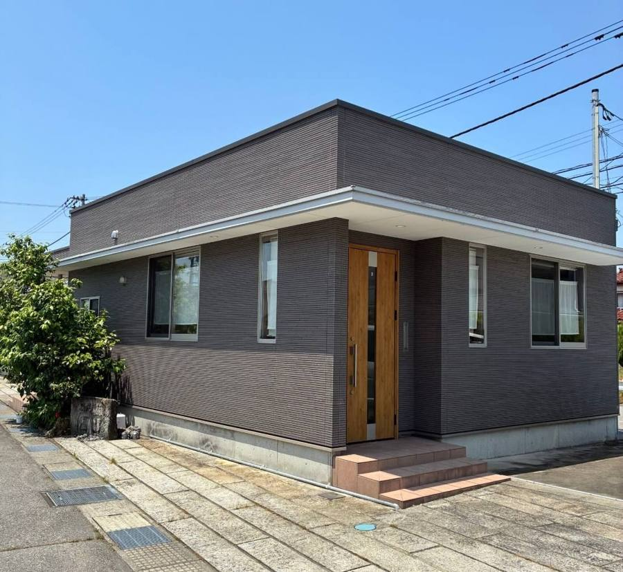
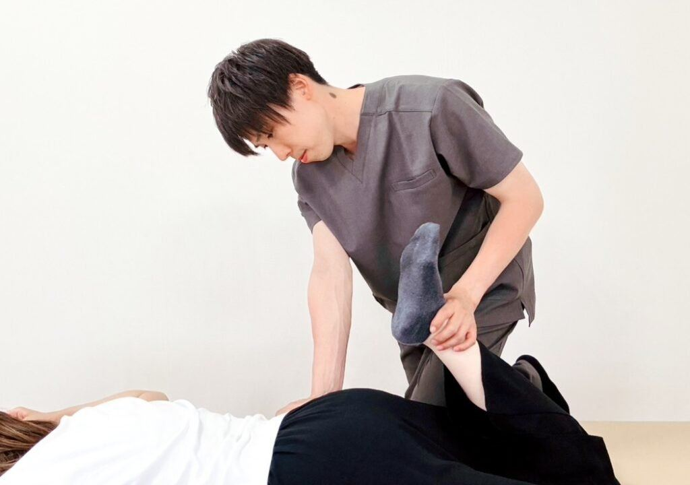
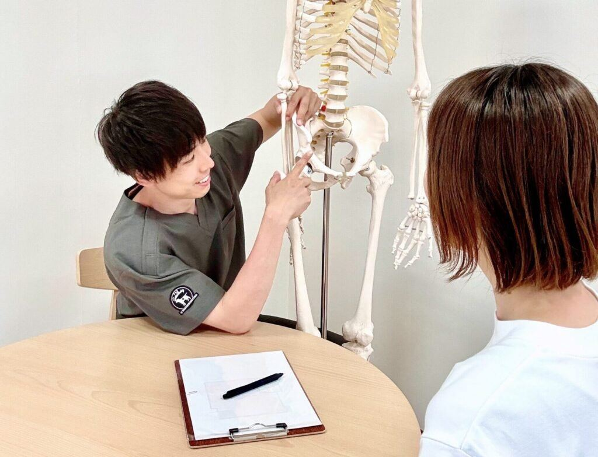
ひとつでも当てはまったら、一度ご相談ください。
1カウンセリングと検査まず原因を確かめる
いつ、どんな場面でつらいのかを一緒に整理し、「ここが原因では」という仮説を一つひとつ検査で確かめてから施術に入ります。
2関節整体バキボキしません
強い力で鳴らすような施術はしません。関節の動きを手で確かめながら、やさしく整えていきます。
3運動療法戻りにくい体づくり
理学療法士として病院で続けてきた運動の指導を、整体と組み合わせます。ご自宅でできる体の使い方もお伝えします。
4初回から卒業まで同じ担当代表の高柳がずっと担当
毎回担当が変わることはありません。ささいな疑問や不安も、同じ先生に何でも聞ける環境をつくっています。
いつ、どんな場面でつらいのかを一緒に整理します
確かめた原因に合わせて施術し、運動もお伝えします
理学療法士｜総合病院勤務16年高柳 賢
総合病院の理学療法士として16年、整形外科の疾患から脳卒中・がん・心疾患まで、延べ4万人以上の施術に携わってきました。
高校時代、ラグビーで膝をけがして思うように走れなくなった経験が、この道を選んだ原点です。時間や制度にとらわれず、おひとりおひとりと向き合いたくて開業しました。施術中は電話に出られないことがあります。ご予約・ご相談はLINEからどうぞ。
「希望の日時をメッセージで送る」必要はありません。空いている日時を選ぶだけです。
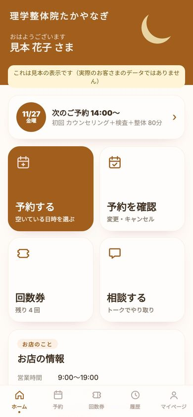
公式LINEのメニューから予約画面を開きます
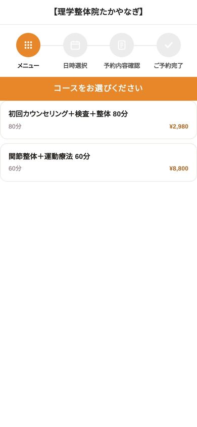
はじめての方は「初回」を選びます
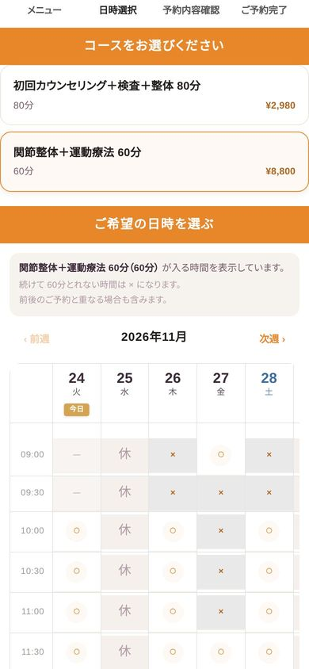
○の日時をタップするだけです
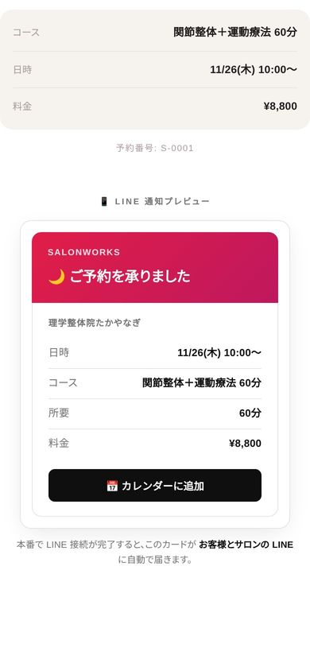
前日にもLINEでお知らせが届きます
使えません。当院はすべて自費での施術です。
バキボキする施術は一切しません。関節の動きを確かめながら、やさしく整えます。
状態によって変わります。目安として、3か月で卒業できるような通い方をご提案しています。
空きがあれば大丈夫です。LINEの予約画面で、その日の空き状況をいつでも確かめられます。
院の前に2台分あります。冬も安心な融雪付きです。
動きやすい服装でお越しください。スカートや硬いデニムは避けていただくと安心です。
富山市下新本町。アルビス奥田店から徒歩2分、環水公園から車で2分です。
空いている日時を選ぶだけで、24時間いつでもご予約いただけます。
気になることのご相談も、LINEからどうぞ。